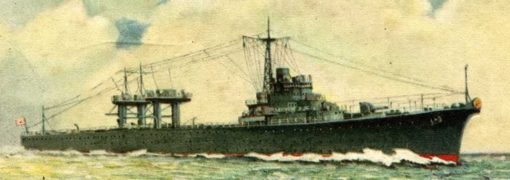

『海軍よもやま物語』
公開日：
")
海軍よもやま物語―帝国海軍おもしろイラスト・エッセイ (光人社NF文庫)
- 作者: 小林孝裕,伊東莫
- 出版社/メーカー: 光人社
- 発売日: 2010/12/01
- メディア: 文庫
- この商品を含むブログ (3件) を見る
2011年の新装版で、もともとは昭和55年の本（わいの生まれた年やな）。ちなみに“艦これ”は2013年4月に始まったので、その需要を当て込んで新装されたわけじゃない。
自分は最近になって戦記物を読むようになったけれど、海軍の用語というのはたたでさえ専門的なのに、略語や訛り、隠語だらけで分かりづらい。そういうのは雰囲気だけ掴んで読み飛ばすことも少なくなかったが、『海軍よもやま物語』のおかげで少しは分かるようになった気がする。下級兵士が体験した面白いことを集めた本なので、けっして体系だってはおらず、これはこれでわかりにくいところもあるが、最初にこういう本を読んでおけば、今まで読んだ本もすんなり理解できたのかもしれない。
作者は航空機の整備兵で、戦艦『山城』乗り組みから水上機母艦『瑞穂』へ移り、おもに水上機の整備やカタパルト射出に従事したようだ。『瑞穂』が撃沈されると、ラバウル、トラック諸島などの航空基地を転々とし、最後は内地から一式陸攻*1による特攻に参加する前に終戦を迎えた*2。なので、戦艦や巡洋艦、駆逐艦の話はあまりないが、どの水兵でも体験するようなことや、航空機・整備に関することは割と充実している。
個々の話に関しては、自分が書くよりも原著にあたった方がよっぽど楽しく読めるだろうので割愛。個人的にはタバコに火をつけるマッチが不足したので「自動着火装置改一」を開発した話や、ダイナマイトでアジをとる話なんかが好きだ。
さて、作者は『瑞穂』乗り組みだが、『瑞穂』については「名前も知らないゲタバキ*3母艦」というだけで、艦の特長や戦歴については触れられていない。

第一次世界大戦が終わり、ワシントン海軍軍縮条約とロンドン海軍軍縮会議が結ばれたが、日本はその規制をかいくぐって米英に対抗する手段を模索していた。その一つは著者も苦しんだ「月月火水木金金」の猛訓練――なんせ、訓練は規制の対象外だ――だったが、もう一つが「給油艦や水上機母艦などの規制外の艦を作り、いざというときに空母へ改装する」というやり方だった*4。
そうした艦の一つが「瑞穂」だった。この「瑞穂」はただのゲタバキ母艦などではなく、甲標的（グアムでレンタカー借りて甲標的（？）みてきた - だるろぐ）の母艦として運用できるようにも設計されていた。同様の艦として水上機母艦「千歳」「千代田」、潜水母艦「大鯨（のちの龍鳳）」、給油艦「剣埼（祥鳳）」「高崎（瑞鳳）」などがあり、いずれも最終的には空母へと改装されている。「瑞穂」は改装される前に撃沈されたが（“軍艦”としては太平洋戦争における最初の犠牲。駆逐艦は正式な軍艦ではない）、もし生き延びていれば「千歳」「千代田」のように空母化されたかもしれない。
もう一つ特筆すべきは、「瑞穂」の機関がディーゼルのみであったこと（「千歳」「千代田」はタービンとディーゼル混用だった）。これは「大和」「武蔵」へ搭載するためのテストでもあったが、これは失敗で（設計22ノットに対して実際は17～18ノット）、目標の性能をだせずじまいだった。結局、「大和」型には従来通りタービンが搭載されている。
「瑞穂」は日中戦争でデビュー。就役すると第四艦隊の旗艦を「足柄」から受け継ぎ、中国方面で活躍。太平洋戦争では第三艦隊麾下の第十一航空戦隊（「千歳」と一緒）に所属し、南方の攻略と水上機基地の建設に従事した。水上機はゲタをはかない戦闘機には勝てないため最前面を張ることはできないが、滑走を路整備しなくても運用できるため、第二線では割と活躍したらしい。
1942年4月、オランダの降伏でジャワ島の攻略が一段落すると、「瑞穂」は一度内地・横須賀へ帰還する。そこでディーゼル機関の修理を受け、全力運転が可能となったが、その後、柱島へ回航する間に敵潜水艦の雷撃を受けて沈没した。どうも、内地だからと油断していたらしい。“撃沈された軍艦”としては、1914年（大正3年）10月18日（第一次世界大戦）に撃沈された防護巡洋艦「高千穂」以来28年ぶりだった。ちなみに、「高千穂」の撃沈もドイツの潜水艦による雷撃によるものだった。